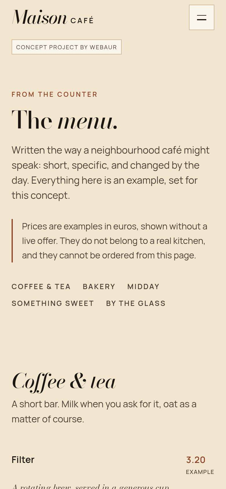
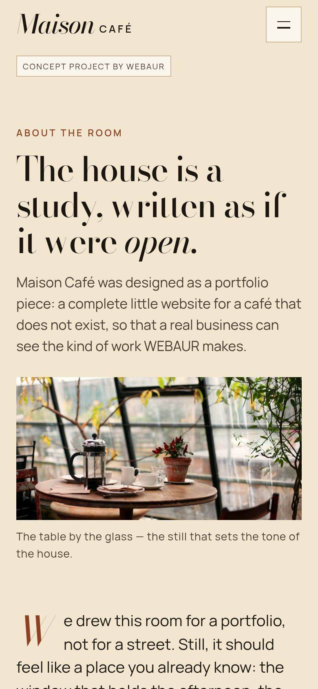
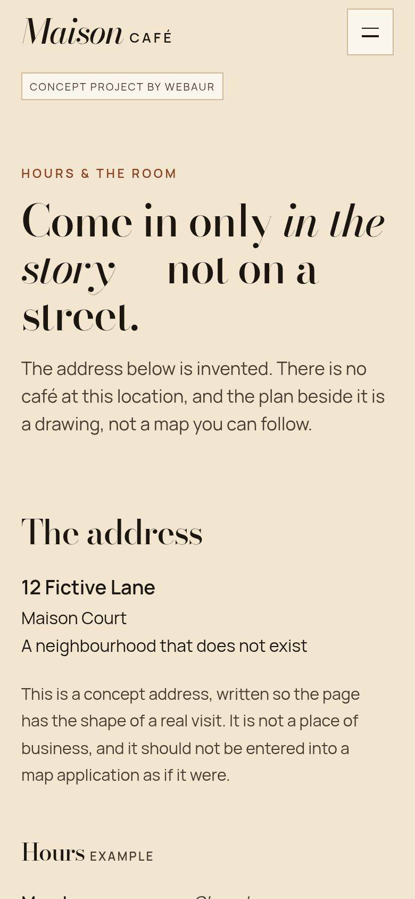

Home
A quiet table.
A conservatory table and a short invitation. The opening is photographic and typographic, closer to a journal than a food-delivery page.
Work / Maison Café
Concept projectA four-page café concept in parchment, bottle green and copper. The site is built like a short journal: a table, a menu, a story, and a visit page that admits it is only in the story.
Design a complete café website with its own identity, a readable menu, a sense of place, and a visit path that does not invent reservations.
Show how WEBAUR would approach hospitality: type, photography and pacing, without turning the café into a template storefront.
An independent café or small restaurant that wants a site with the same warmth as the room — slower and more considered than a delivery listing.
This is a concept project. It is not a paying-client website, and it does not invent customers, reviews or results.
Brand identity
Bodoni Moda
A quiet table.
Shown here in a system stand-in. The live demo loads Bodoni Moda.
Manrope
Pastry, coffee and a room that holds the afternoon.
Shown here in a system stand-in. The live demo loads Manrope.
Maison Café
Warm and typographic. Bodoni Moda for the display voice, Manrope for the body, a parchment ground with bottle-green bands and a copper accent.
Page by page
Home
A conservatory table and a short invitation. The opening is photographic and typographic, closer to a journal than a food-delivery page.
Menu
Coffee, pastry and plates set as an editorial list. Prices are example figures for the concept, not a live kitchen.




Story
A longer piece about the house and the room. It is written as atmosphere, and it does not invent a founding year or a family history presented as fact.
Visit
Hours and a visit invitation, stated clearly: this is a story, not a street address you can walk to. No reservation is placed.


The visit page is explicit: you come in only in the story, not on a street. There is no real table to book.
Bodoni Moda gives the name and headlines a printed quality; Manrope keeps the menu and the story comfortable to read. Copper is used like a warm metal, not a neon accent.
Items are set in a list with space, not in a crowded grid of cards. The photography supports the list rather than replacing it.
A real café would publish a real address and a real booking path. This concept keeps the invitation and tells you it is fictional.
START A PROJECT
Tell us about your business and what you would like to improve. We’ll take it from there.